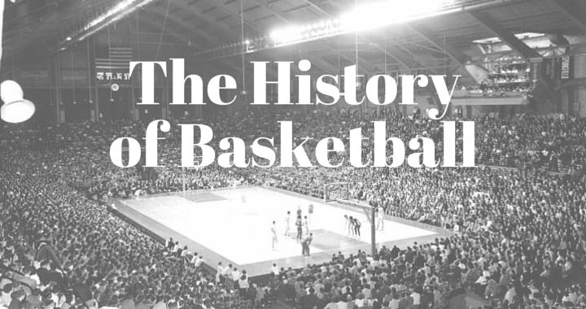

When Dr James Naismith invented basketball in 1891, he could never have imagined that the game would eventually become one of the world’s most popular sports; played in more than 200 countries, and a multi-billion dollar industry.The game of Basketball originated when Naismith, a theologian and physical education instructor, was assigned to teach a Physical Education class at a Young Men’s Christian Association (YMCA) training school in Springfield, Massachusetts in the United States. The class had a reputation for disorderly behaviour – indeed they were known as the ‘incorrigibles’, and Naismith was asked to devise a new game to keep the students occupied. Since it was very cold outside, a game that could be played indoors was desirable.James Naismith hailed from Almonte, Ontario, a small town not far from Canada’s capital city, Ottawa. His father and mother died when he was eight and was brought up by an uncle. In thinking of a game that would appeal to his students, he recalled his boyhood in Canada, where he and his friends had played ‘Duck on a Rock’, which involved trying to knock a large rock off a boulder by throwing smaller rocks at it.In that game, the best players threw the rock in an arc so that it bounced near the duck even if it did not actually hit it. This allowed another turn rather than elimination. Naismith also came up with the idea of a ‘horizontal goal’.He mounted a box at either end of the floor well above the players’ heads, so even the best defence could be overcome. Each time the ball entered the box, it would count as a goal. When boxes couldn’t be found, he used peach baskets. Naismith nailed a peach basket to the lower rail of the balcony, ten feet off the floor, at either end of the gym.Click for more information on History
